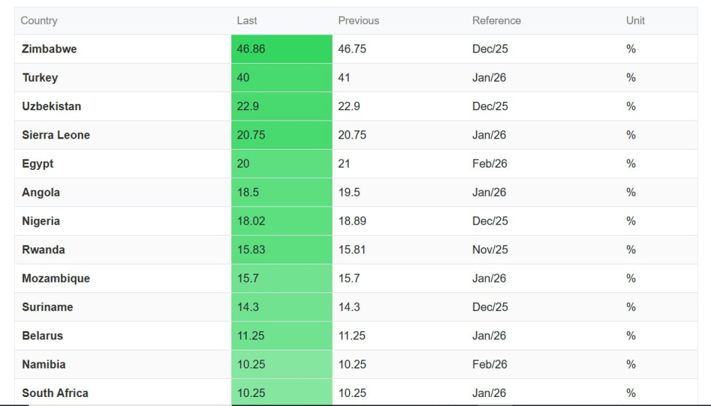

"O'zbekistonda kredit foizlari dunyodagi eng yuqorilardan biri bo'lib qolmoqda"
2026 yilga kelib kreditlarning o'rtacha stavkasi bo'yicha O'zbekistondan faqat sanoqli davlatlar oldinda. Real foiz stavkalari o'sgani sari axoli ko'proq kredit olmoqda.
Kredit foizlari qaysi davlatda qanday belgilanishi koʻp jihatdan oʻsha davlatda pulning narxi qancha ekani bilan bogʻliq. Agarda inflyatsiya yuqoriroq boʻladigan boʻlsa, kredit foizlari ham baland boʻladi.
Bundan tashqari, kredit foizlariga Markaziy banklar tomonidan belgilanadigan asosiy stavka ham taʼsir qiladi.
2025-yil dekabr holatiga koʻra, Oʻzbekistonda yuqoriroq foizda ajratiladigan mikroqarzlardan tashqari kreditlarning oʻrtacha foizi 22,9 foizni tashkil qilgan. 1-yanvar holati boʻyicha bu raqam 23,4 foizgacha oʻsgan.
Bu koʻrsatkich dunyo boʻyicha eng yuqori darajalardan biri hisoblanadi. Trading Economics maʼlumotlarida koʻrsatilishicha, Oʻzbekistondan faqat Turkiya va Zimbabveda kredit foizlari yuqoriroq.

Turkiya va Zimbabve Oʻzbekistondan farqli ravishda bir necha yildan beri giperinflyatsiya bilan kurashib kelayotgan davlatlardir. Yevropa davlatlarida kreditlar oʻrtacha 2,4 foizdan ajratilsa, AQSHda bu koʻrsatkich 6-7 foiz atrofida. Rossiyada kreditlar 18 foiz atrofida ajratiladi. Qoʻshni Qozogʻistonda ham aholi bankdan oʻrtacha 17-18 foiz atrofida kredit olishi mumkin. Uzoq muddatli kreditlar foizi 12-13 foiz atrofida. Oʻzbekistonda esa uzoq muddatli kreditlarni oʻrtacha 23 foizdan kamiga topib boʻlmaydi. Bu Qozogʻistondan deyarli 2 barobar qimmatroq.
Kredit olish koʻpayishda davom etmoqda
Oʻzbekistonda kredit foizlari hamon yuqoriligicha qolayotgan boʻlsada, odamlarning kreditga boʻlgan talabi pasaygani yoʻq. Inflyatsiyaning pasayishiga qaramasdan, kreditlarning oʻrtacha real foiz stavkasi 2025-yilning soʻngida soʻnggi yillarda birinchi marta 10 foizdan oshdi.